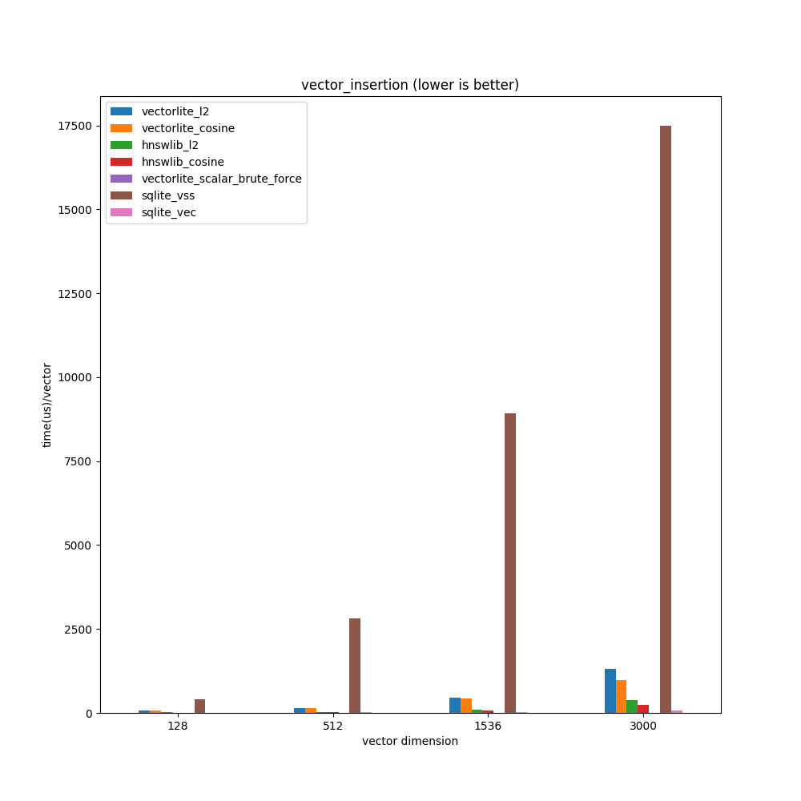
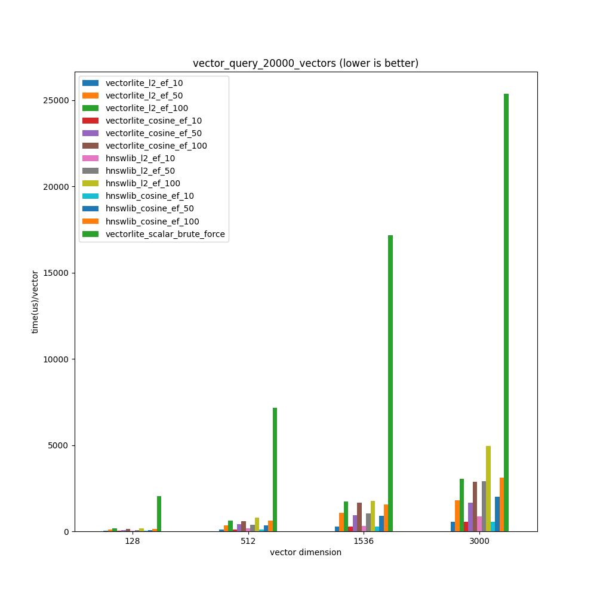
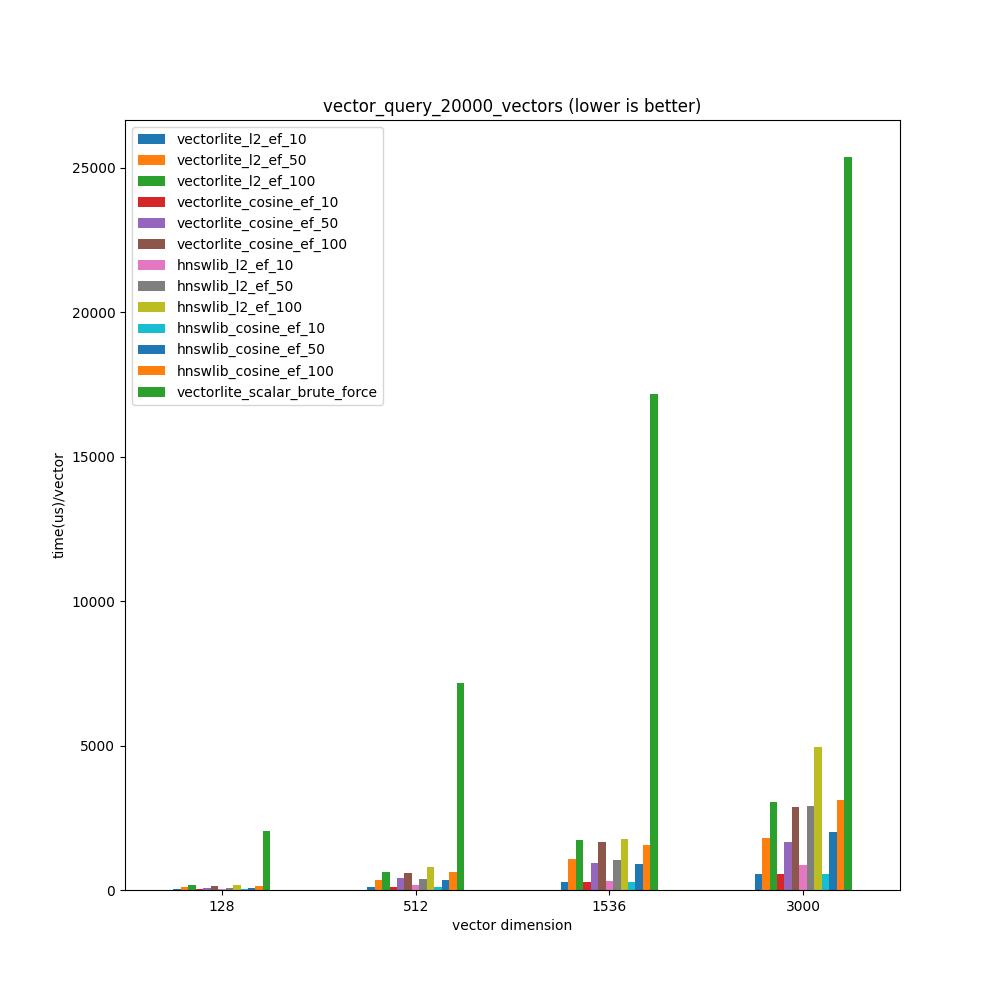

News
Vectorlite gets even faster with v0.2.0 release
performance improvements
Vectorlite is fast since its first release, mainly thanks to the underlying vector search library hnswlib. However, hnswlib comes with some limitations:
hnswlib’s vector distance implementation falls back to a slow scalar implementation on ARM platforms.
On x64 platforms with AVX2 support, hnswlib’s SIMD implementation only uses AVX instructions when faster instructions like Fused-Multiply-Add are available.
SIMD instructions are determined at compile time. It could be problematic because vectorlite is currently distributed as pre-compiled packages against AVX2 for python and nodejs, but a user’s machine may not support it. Besides, if a user’s machine supports more advacned SIMD instructions like AVX-512, pre-compiled vectorlite won’t be able to leverage them.
hnswlib’s vector normalization, which is requried when using cosine distance, is not SIMD accelerated.
Vectorlite addresses theses issues in v0.2.0 release by implementing its own portable vector distance implementation using Google’s highway library.
As a result, vectorlite gets even faster in v0.2.0:
Thanks to highway’s dynamic dispatch feature, vectorlite can now detect the best available SIMD instruction set to use at runtime with a little bit runtime cost if vector dimension is small(<=128).
On my PC(i5-12600KF intel CPU with AVX2 support), vectorlite’s vector distance implementation is 1.5x-3x faster than hnswlib’s implementation when vector dimension is bigger(>=256), mainly because vectorlite’s implementation can leverage AVX2’s Fused-Multiply-Add operations. But it is a little bit slower than hnswlib’s implementation when vector dimension is small(<=128), due to the cost of dynamic dispatch.
On ARM platforms, vectorlite is also SIMD accelerated now.
Vector normalization is now guaranteed to be SIMD-accelerated, which is 4x-10x faster than the scalar implementation.
With v0.2.0 release, vectorlite’ vector search performance is at least on-par and more often even better than using hnswlib directly.
Surprisingly, using the new vector distance implementation, even raw brute force vector search with vectorlite’s vector_distance function is faster than sqlite-vec, which features brute-force vector search based on SQLite’s virtual table.
-- brute force using vectorlite's vector_distance function
-- use a normal sqlite table
create table my_table(rowid integer primary key, embedding blob);
-- insert
insert into my_table(rowid, embedding) values (0, {your_embedding});
-- search for 10 nearest neighbors using l2 squared distance
select rowid from my_table order by vector_distance({query_vector}, embedding, 'l2') asc limit 10
E2E benchmark update
Please note only small datasets(with 3000 or 20000 vectors) are used because it would be unfair to benchmark against sqlite-vec using larger datasets. Sqlite-vec only uses brute-force, which doesn’t scale with large datasets, while vectorlite uses ANN(approximate nearest neighbors), which scales to large datasets at the cost of not being 100% accurate.
How the benchmark is done:
Insert 3000/20000 randomly-generated vectors of dimension 128,512,1536 and 3000 into a vectorlite table with HNSW parameters ef_construction=100, M=30.
Randomly generate 100 vectors and then query the table with them for 10 nearest neighbors with ef=10,50,100 to see how ef impacts recall rate.
Calculate recall rate by comparing the result with the neighbors calculated using brute force.
vectorlite_scalar_brute_force(which is just inserting vectors into a normal sqlite table and do
select rowid from my_table order by vector_distance(query_vector, embedding, 'l2') limit 10) is benchmarked as the baseline to see how much hnsw speeds up vector query.hnswlib is also benchmarked to see how much cost SQLite adds to vectorlite. The benchmark is run in WSL on my PC with a i5-12600KF intel CPU and 16G RAM.
TL;DR:
Vectorlite’s vector query is 3x-100x faster than sqlite-vec at the cost of lower recall rate. The difference gets larger when the dataset size grows, which is expected because sqlite-vec only supports brute force.
Surprisingly, vectorlite_scalar_brute_force’s vector query is about 1.5x faster for vectors with dimension >= 512 but slower than sqlite-vec for 128d vectors. vectorlite_scalar_brute_force’s vector insertion is 3x-8x faster than sqlite-vec.
Compared with hnswlib, vectorlite provides almost identical recall rate. Vector query speed with L2 distance is on par with 128d vectors and is 1.5x faster when dealing with 3000d vectors. Mainly because vectorlite’s vector distance implementation is faster. But vectorlite’s vector insertion is about 4x-5x slower, which I guess is the cost added by SQLite.
Compared with brute force baseline(vectorlite_scalar_brute_force), vectorlite’s knn query is 8x-80x faster.
The benchmark code can be found in benchmark folder, which can be used as an example of how to improve recall rate for your scenario by tuning HNSW parameters.
3000 vectors
When dealing with 3000 vectors(which is a fairly small dataset):
Compared with sqlite-vec, vectorlite’s vector query can be 3x-15x faster with 128-d vectors, 6x-26x faster with 512-d vectors, 7x-30x faster with 1536-d vectors and 6x-24x faster with 3000-d vectors. But vectorlite’s vector insertion is 6x-16x slower, which is expected because sqlite-vec uses brute force only and doesn’t do much indexing.
Compared with vectorlite_scalar_brute_force, hnsw provides about 10x-40x speed up.
Compared with hnswlib, vectorlite provides almost identical recall rate. Vector query speed is on par with 128d vectors and is 1.5x faster when dealing with 3000d vectors. Mainly because vectorlite’s vector distance implementation is faster. But vector insertion is about 4x-5x slower.
vectorlite_scalar_brute_force’s vector insertion 4x-7x is faster than sqlite-vec, and vector query is about 1.7x faster when dealing with vectors of dimension >= 512.


Check raw data
Using local vectorlite: ../build/release/vectorlite/vectorlite.so
Benchmarking using 3000 randomly vectors. 100 10-nearest neighbor queries will be performed on each case.
┏━━━━━━━━━━┳━━━━━━━━━━━┳━━━━━━━━━━━━━━┳━━━━┳━━━━━━━━┳━━━━━━━━━━━━━┳━━━━━━━━━━━━━┳━━━━━━━━┓
┃ distance ┃ vector ┃ ef ┃ ┃ ef ┃ insert_time ┃ search_time ┃ recall ┃
┃ type ┃ dimension ┃ construction ┃ M ┃ search ┃ per vector ┃ per query ┃ rate ┃
┡━━━━━━━━━━╇━━━━━━━━━━━╇━━━━━━━━━━━━━━╇━━━━╇━━━━━━━━╇━━━━━━━━━━━━━╇━━━━━━━━━━━━━╇━━━━━━━━┩
│ l2 │ 128 │ 100 │ 30 │ 10 │ 62.41 us │ 12.96 us │ 56.40% │
│ l2 │ 128 │ 100 │ 30 │ 50 │ 62.41 us │ 42.95 us │ 93.30% │
│ l2 │ 128 │ 100 │ 30 │ 100 │ 62.41 us │ 62.06 us │ 99.40% │
│ l2 │ 512 │ 100 │ 30 │ 10 │ 146.40 us │ 38.05 us │ 46.60% │
│ l2 │ 512 │ 100 │ 30 │ 50 │ 146.40 us │ 95.96 us │ 86.50% │
│ l2 │ 512 │ 100 │ 30 │ 100 │ 146.40 us │ 148.46 us │ 96.70% │
│ l2 │ 1536 │ 100 │ 30 │ 10 │ 463.56 us │ 124.51 us │ 38.10% │
│ l2 │ 1536 │ 100 │ 30 │ 50 │ 463.56 us │ 355.70 us │ 78.50% │
│ l2 │ 1536 │ 100 │ 30 │ 100 │ 463.56 us │ 547.84 us │ 92.70% │
│ l2 │ 3000 │ 100 │ 30 │ 10 │ 1323.25 us │ 391.57 us │ 36.60% │
│ l2 │ 3000 │ 100 │ 30 │ 50 │ 1323.25 us │ 1041.37 us │ 78.60% │
│ l2 │ 3000 │ 100 │ 30 │ 100 │ 1323.25 us │ 1443.10 us │ 93.10% │
│ cosine │ 128 │ 100 │ 30 │ 10 │ 59.75 us │ 15.27 us │ 58.30% │
│ cosine │ 128 │ 100 │ 30 │ 50 │ 59.75 us │ 36.72 us │ 94.60% │
│ cosine │ 128 │ 100 │ 30 │ 100 │ 59.75 us │ 63.67 us │ 99.30% │
│ cosine │ 512 │ 100 │ 30 │ 10 │ 148.19 us │ 36.98 us │ 51.00% │
│ cosine │ 512 │ 100 │ 30 │ 50 │ 148.19 us │ 102.46 us │ 88.10% │
│ cosine │ 512 │ 100 │ 30 │ 100 │ 148.19 us │ 143.41 us │ 96.90% │
│ cosine │ 1536 │ 100 │ 30 │ 10 │ 427.21 us │ 106.94 us │ 42.10% │
│ cosine │ 1536 │ 100 │ 30 │ 50 │ 427.21 us │ 285.50 us │ 83.30% │
│ cosine │ 1536 │ 100 │ 30 │ 100 │ 427.21 us │ 441.66 us │ 95.60% │
│ cosine │ 3000 │ 100 │ 30 │ 10 │ 970.17 us │ 289.00 us │ 42.20% │
│ cosine │ 3000 │ 100 │ 30 │ 50 │ 970.17 us │ 848.03 us │ 83.90% │
│ cosine │ 3000 │ 100 │ 30 │ 100 │ 970.17 us │ 1250.29 us │ 95.60% │
└──────────┴───────────┴──────────────┴────┴────────┴─────────────┴─────────────┴────────┘
Bencharmk hnswlib as comparison.
┏━━━━━━━━━━┳━━━━━━━━━━━┳━━━━━━━━━━━━━━┳━━━━┳━━━━━━━━┳━━━━━━━━━━━━━┳━━━━━━━━━━━━━┳━━━━━━━━┓
┃ distance ┃ vector ┃ ef ┃ ┃ ef ┃ insert_time ┃ search_time ┃ recall ┃
┃ type ┃ dimension ┃ construction ┃ M ┃ search ┃ per vector ┃ per query ┃ rate ┃
┡━━━━━━━━━━╇━━━━━━━━━━━╇━━━━━━━━━━━━━━╇━━━━╇━━━━━━━━╇━━━━━━━━━━━━━╇━━━━━━━━━━━━━╇━━━━━━━━┩
│ l2 │ 128 │ 100 │ 30 │ 10 │ 12.84 us │ 12.83 us │ 56.90% │
│ l2 │ 128 │ 100 │ 30 │ 50 │ 12.84 us │ 41.93 us │ 93.60% │
│ l2 │ 128 │ 100 │ 30 │ 100 │ 12.84 us │ 65.84 us │ 99.40% │
│ l2 │ 512 │ 100 │ 30 │ 10 │ 29.34 us │ 47.37 us │ 47.00% │
│ l2 │ 512 │ 100 │ 30 │ 50 │ 29.34 us │ 126.29 us │ 86.40% │
│ l2 │ 512 │ 100 │ 30 │ 100 │ 29.34 us │ 198.30 us │ 96.80% │
│ l2 │ 1536 │ 100 │ 30 │ 10 │ 90.05 us │ 149.35 us │ 37.20% │
│ l2 │ 1536 │ 100 │ 30 │ 50 │ 90.05 us │ 431.53 us │ 78.00% │
│ l2 │ 1536 │ 100 │ 30 │ 100 │ 90.05 us │ 765.03 us │ 92.50% │
│ l2 │ 3000 │ 100 │ 30 │ 10 │ 388.87 us │ 708.98 us │ 36.30% │
│ l2 │ 3000 │ 100 │ 30 │ 50 │ 388.87 us │ 1666.87 us │ 78.90% │
│ l2 │ 3000 │ 100 │ 30 │ 100 │ 388.87 us │ 2489.98 us │ 93.40% │
│ cosine │ 128 │ 100 │ 30 │ 10 │ 10.90 us │ 11.14 us │ 58.10% │
│ cosine │ 128 │ 100 │ 30 │ 50 │ 10.90 us │ 37.39 us │ 94.30% │
│ cosine │ 128 │ 100 │ 30 │ 100 │ 10.90 us │ 62.45 us │ 99.40% │
│ cosine │ 512 │ 100 │ 30 │ 10 │ 25.46 us │ 38.92 us │ 50.70% │
│ cosine │ 512 │ 100 │ 30 │ 50 │ 25.46 us │ 109.84 us │ 87.90% │
│ cosine │ 512 │ 100 │ 30 │ 100 │ 25.46 us │ 151.00 us │ 97.10% │
│ cosine │ 1536 │ 100 │ 30 │ 10 │ 77.53 us │ 119.48 us │ 42.00% │
│ cosine │ 1536 │ 100 │ 30 │ 50 │ 77.53 us │ 340.78 us │ 84.00% │
│ cosine │ 1536 │ 100 │ 30 │ 100 │ 77.53 us │ 510.02 us │ 95.50% │
│ cosine │ 3000 │ 100 │ 30 │ 10 │ 234.79 us │ 453.12 us │ 43.20% │
│ cosine │ 3000 │ 100 │ 30 │ 50 │ 234.79 us │ 1380.79 us │ 83.80% │
│ cosine │ 3000 │ 100 │ 30 │ 100 │ 234.79 us │ 1520.92 us │ 95.70% │
└──────────┴───────────┴──────────────┴────┴────────┴─────────────┴─────────────┴────────┘
Bencharmk vectorlite brute force(select rowid from my_table order by vector_distance(query_vector, embedding, 'l2')) as comparison.
┏━━━━━━━━━━┳━━━━━━━━━━━┳━━━━━━━━━━━━━┳━━━━━━━━━━━━━┳━━━━━━━━━┓
┃ distance ┃ vector ┃ insert_time ┃ search_time ┃ recall ┃
┃ type ┃ dimension ┃ per vector ┃ per query ┃ rate ┃
┡━━━━━━━━━━╇━━━━━━━━━━━╇━━━━━━━━━━━━━╇━━━━━━━━━━━━━╇━━━━━━━━━┩
│ l2 │ 128 │ 2.38 us │ 299.14 us │ 100.00% │
│ l2 │ 512 │ 3.69 us │ 571.19 us │ 100.00% │
│ l2 │ 1536 │ 4.86 us │ 2237.64 us │ 100.00% │
│ l2 │ 3000 │ 7.69 us │ 5135.63 us │ 100.00% │
└──────────┴───────────┴─────────────┴─────────────┴─────────┘
Bencharmk sqlite_vss as comparison.
┏━━━━━━━━━━┳━━━━━━━━━━━┳━━━━━━━━━━━━━┳━━━━━━━━━━━━━┳━━━━━━━━━┓
┃ distance ┃ vector ┃ insert_time ┃ search_time ┃ recall ┃
┃ type ┃ dimension ┃ per vector ┃ per query ┃ rate ┃
┡━━━━━━━━━━╇━━━━━━━━━━━╇━━━━━━━━━━━━━╇━━━━━━━━━━━━━╇━━━━━━━━━┩
│ l2 │ 128 │ 395.24 us │ 2508.52 us │ 99.90% │
│ l2 │ 512 │ 2824.89 us │ 1530.77 us │ 100.00% │
│ l2 │ 1536 │ 8931.72 us │ 1602.36 us │ 100.00% │
│ l2 │ 3000 │ 17498.60 us │ 3142.38 us │ 100.00% │
└──────────┴───────────┴─────────────┴─────────────┴─────────┘
Bencharmk sqlite_vec as comparison.
┏━━━━━━━━━━┳━━━━━━━━━━━┳━━━━━━━━━━━━━┳━━━━━━━━━━━━━┳━━━━━━━━━┓
┃ distance ┃ vector ┃ insert_time ┃ search_time ┃ recall ┃
┃ type ┃ dimension ┃ per vector ┃ per query ┃ rate ┃
┡━━━━━━━━━━╇━━━━━━━━━━━╇━━━━━━━━━━━━━╇━━━━━━━━━━━━━╇━━━━━━━━━┩
│ l2 │ 128 │ 10.21 us │ 202.05 us │ 100.00% │
│ l2 │ 512 │ 14.43 us │ 989.64 us │ 100.00% │
│ l2 │ 1536 │ 31.68 us │ 3856.08 us │ 100.00% │
│ l2 │ 3000 │ 59.94 us │ 9503.91 us │ 100.00% │
└──────────┴───────────┴─────────────┴─────────────┴─────────┘
20000 vectors
When dealing with 20000 vectors,
Compared with sqlite-vec, vectorlite’s vector query can be 8x-100x faster depending on vector dimension.
Compared with vectorlite_scalar_brute_force, hnsw provides about 8x-80x speed up with reduced recall rate at 13.8%-85% depending on vector dimension.
Compared with hnswlib, vectorlite provides almost identical recall rate. Vector query is on par with 128d vectors and can be 1.5x faster with 3000d vectors. But vector insertion is 3x-9x slower.
vectorlite_scalar_brute_force’s vector insertion is 4x-8x faster than sqlite-vec. sqlite-vec’s vector query is 1.5x faster with 128d vectors and 1.8x slower when vector dimension>=512.
Please note:
sqlite-vss is not benchmarked with 20000 vectors because its index creation takes so long that it doesn’t finish in hours.
sqlite-vec’s vector query is benchmarked and included in the raw data, but not plotted in the figure because it’s search time is disproportionally long.
 

Check raw data
Using local vectorlite: ../build/release/vectorlite/vectorlite.so
Benchmarking using 20000 randomly vectors. 100 10-neariest neighbor queries will be performed on each case.
┏━━━━━━━━━━┳━━━━━━━━━━━┳━━━━━━━━━━━━━━┳━━━━┳━━━━━━━━┳━━━━━━━━━━━━━┳━━━━━━━━━━━━━┳━━━━━━━━┓
┃ distance ┃ vector ┃ ef ┃ ┃ ef ┃ insert_time ┃ search_time ┃ recall ┃
┃ type ┃ dimension ┃ construction ┃ M ┃ search ┃ per vector ┃ per query ┃ rate ┃
┡━━━━━━━━━━╇━━━━━━━━━━━╇━━━━━━━━━━━━━━╇━━━━╇━━━━━━━━╇━━━━━━━━━━━━━╇━━━━━━━━━━━━━╇━━━━━━━━┩
│ l2 │ 128 │ 100 │ 30 │ 10 │ 187.41 us │ 46.58 us │ 29.10% │
│ l2 │ 128 │ 100 │ 30 │ 50 │ 187.41 us │ 95.16 us │ 70.20% │
│ l2 │ 128 │ 100 │ 30 │ 100 │ 187.41 us │ 179.51 us │ 85.70% │
│ l2 │ 512 │ 100 │ 30 │ 10 │ 820.80 us │ 105.80 us │ 18.10% │
│ l2 │ 512 │ 100 │ 30 │ 50 │ 820.80 us │ 361.83 us │ 50.40% │
│ l2 │ 512 │ 100 │ 30 │ 100 │ 820.80 us │ 628.88 us │ 67.00% │
│ l2 │ 1536 │ 100 │ 30 │ 10 │ 2665.31 us │ 292.39 us │ 13.70% │
│ l2 │ 1536 │ 100 │ 30 │ 50 │ 2665.31 us │ 1069.47 us │ 42.40% │
│ l2 │ 1536 │ 100 │ 30 │ 100 │ 2665.31 us │ 1744.79 us │ 59.50% │
│ l2 │ 3000 │ 100 │ 30 │ 10 │ 5236.76 us │ 558.56 us │ 13.80% │
│ l2 │ 3000 │ 100 │ 30 │ 50 │ 5236.76 us │ 1787.83 us │ 39.30% │
│ l2 │ 3000 │ 100 │ 30 │ 100 │ 5236.76 us │ 3039.94 us │ 56.60% │
│ cosine │ 128 │ 100 │ 30 │ 10 │ 164.31 us │ 25.35 us │ 34.70% │
│ cosine │ 128 │ 100 │ 30 │ 50 │ 164.31 us │ 78.33 us │ 71.20% │
│ cosine │ 128 │ 100 │ 30 │ 100 │ 164.31 us │ 133.75 us │ 87.60% │
│ cosine │ 512 │ 100 │ 30 │ 10 │ 711.35 us │ 100.90 us │ 19.00% │
│ cosine │ 512 │ 100 │ 30 │ 50 │ 711.35 us │ 406.08 us │ 51.10% │
│ cosine │ 512 │ 100 │ 30 │ 100 │ 711.35 us │ 582.51 us │ 71.50% │
│ cosine │ 1536 │ 100 │ 30 │ 10 │ 2263.96 us │ 283.88 us │ 22.60% │
│ cosine │ 1536 │ 100 │ 30 │ 50 │ 2263.96 us │ 919.98 us │ 54.50% │
│ cosine │ 1536 │ 100 │ 30 │ 100 │ 2263.96 us │ 1674.77 us │ 72.40% │
│ cosine │ 3000 │ 100 │ 30 │ 10 │ 4541.09 us │ 566.31 us │ 19.80% │
│ cosine │ 3000 │ 100 │ 30 │ 50 │ 4541.09 us │ 1672.82 us │ 49.30% │
│ cosine │ 3000 │ 100 │ 30 │ 100 │ 4541.09 us │ 2855.43 us │ 65.40% │
└──────────┴───────────┴──────────────┴────┴────────┴─────────────┴─────────────┴────────┘
Bencharmk hnswlib as comparison.
┏━━━━━━━━━━┳━━━━━━━━━━━┳━━━━━━━━━━━━━━┳━━━━┳━━━━━━━━┳━━━━━━━━━━━━━┳━━━━━━━━━━━━━┳━━━━━━━━┓
┃ distance ┃ vector ┃ ef ┃ ┃ ef ┃ insert_time ┃ search_time ┃ recall ┃
┃ type ┃ dimension ┃ construction ┃ M ┃ search ┃ per vector ┃ per query ┃ rate ┃
┡━━━━━━━━━━╇━━━━━━━━━━━╇━━━━━━━━━━━━━━╇━━━━╇━━━━━━━━╇━━━━━━━━━━━━━╇━━━━━━━━━━━━━╇━━━━━━━━┩
│ l2 │ 128 │ 100 │ 30 │ 10 │ 23.06 us │ 39.96 us │ 29.60% │
│ l2 │ 128 │ 100 │ 30 │ 50 │ 23.06 us │ 75.02 us │ 69.80% │
│ l2 │ 128 │ 100 │ 30 │ 100 │ 23.06 us │ 160.01 us │ 85.40% │
│ l2 │ 512 │ 100 │ 30 │ 10 │ 146.58 us │ 167.31 us │ 18.10% │
│ l2 │ 512 │ 100 │ 30 │ 50 │ 146.58 us │ 392.12 us │ 50.80% │
│ l2 │ 512 │ 100 │ 30 │ 100 │ 146.58 us │ 781.50 us │ 67.20% │
│ l2 │ 1536 │ 100 │ 30 │ 10 │ 657.41 us │ 298.71 us │ 12.70% │
│ l2 │ 1536 │ 100 │ 30 │ 50 │ 657.41 us │ 1031.61 us │ 40.60% │
│ l2 │ 1536 │ 100 │ 30 │ 100 │ 657.41 us │ 1764.34 us │ 57.90% │
│ l2 │ 3000 │ 100 │ 30 │ 10 │ 1842.77 us │ 852.88 us │ 13.80% │
│ l2 │ 3000 │ 100 │ 30 │ 50 │ 1842.77 us │ 2905.57 us │ 39.60% │
│ l2 │ 3000 │ 100 │ 30 │ 100 │ 1842.77 us │ 4936.35 us │ 56.50% │
│ cosine │ 128 │ 100 │ 30 │ 10 │ 19.25 us │ 23.27 us │ 34.20% │
│ cosine │ 128 │ 100 │ 30 │ 50 │ 19.25 us │ 72.66 us │ 71.40% │
│ cosine │ 128 │ 100 │ 30 │ 100 │ 19.25 us │ 134.11 us │ 87.60% │
│ cosine │ 512 │ 100 │ 30 │ 10 │ 112.80 us │ 106.90 us │ 22.70% │
│ cosine │ 512 │ 100 │ 30 │ 50 │ 112.80 us │ 341.23 us │ 54.20% │
│ cosine │ 512 │ 100 │ 30 │ 100 │ 112.80 us │ 609.93 us │ 72.40% │
│ cosine │ 1536 │ 100 │ 30 │ 10 │ 615.04 us │ 268.00 us │ 22.50% │
│ cosine │ 1536 │ 100 │ 30 │ 50 │ 615.04 us │ 898.82 us │ 54.00% │
│ cosine │ 1536 │ 100 │ 30 │ 100 │ 615.04 us │ 1557.51 us │ 71.90% │
│ cosine │ 3000 │ 100 │ 30 │ 10 │ 1425.49 us │ 546.18 us │ 20.60% │
│ cosine │ 3000 │ 100 │ 30 │ 50 │ 1425.49 us │ 2008.53 us │ 49.20% │
│ cosine │ 3000 │ 100 │ 30 │ 100 │ 1425.49 us │ 3106.51 us │ 65.00% │
└──────────┴───────────┴──────────────┴────┴────────┴─────────────┴─────────────┴────────┘
Bencharmk vectorlite brute force(select rowid from my_table order by vector_distance(query_vector, embedding, 'l2')) as comparison.
┏━━━━━━━━━━┳━━━━━━━━━━━┳━━━━━━━━━━━━━┳━━━━━━━━━━━━━┳━━━━━━━━━┓
┃ distance ┃ vector ┃ insert_time ┃ search_time ┃ recall ┃
┃ type ┃ dimension ┃ per vector ┃ per query ┃ rate ┃
┡━━━━━━━━━━╇━━━━━━━━━━━╇━━━━━━━━━━━━━╇━━━━━━━━━━━━━╇━━━━━━━━━┩
│ l2 │ 128 │ 0.93 us │ 2039.69 us │ 100.00% │
│ l2 │ 512 │ 2.73 us │ 7177.23 us │ 100.00% │
│ l2 │ 1536 │ 4.64 us │ 17163.25 us │ 100.00% │
│ l2 │ 3000 │ 6.62 us │ 25378.79 us │ 100.00% │
└──────────┴───────────┴─────────────┴─────────────┴─────────┘
Bencharmk sqlite_vec as comparison.
┏━━━━━━━━━━┳━━━━━━━━━━━┳━━━━━━━━━━━━━┳━━━━━━━━━━━━━┳━━━━━━━━━┓
┃ distance ┃ vector ┃ insert_time ┃ search_time ┃ recall ┃
┃ type ┃ dimension ┃ per vector ┃ per query ┃ rate ┃
┡━━━━━━━━━━╇━━━━━━━━━━━╇━━━━━━━━━━━━━╇━━━━━━━━━━━━━╇━━━━━━━━━┩
│ l2 │ 128 │ 3.49 us │ 1560.17 us │ 100.00% │
│ l2 │ 512 │ 6.73 us │ 7778.39 us │ 100.00% │
│ l2 │ 1536 │ 17.13 us │ 26344.76 us │ 100.00% │
│ l2 │ 3000 │ 35.30 us │ 60652.58 us │ 100.00% │
└──────────┴───────────┴─────────────┴─────────────┴─────────┘
Conclusion
With v0.2.0 release, vectorlite’s vector search performance is even faster thanks to its new SIMD accelerated vector distance implementation. It even often runs faster than using hnswlib directly on a machine with AVX2 support.
When it comes to vector search, vectorlite has significat performance advantage over similar projects even with small datasets and should scale to larger datasets.
There’s still a lot of future work for vectorlite:
vector scalar quantization support
benchmark on larger datasets
user provided metadata(rowid) filter support
Please stay tuned!